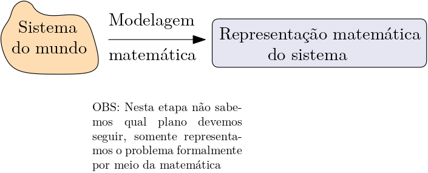
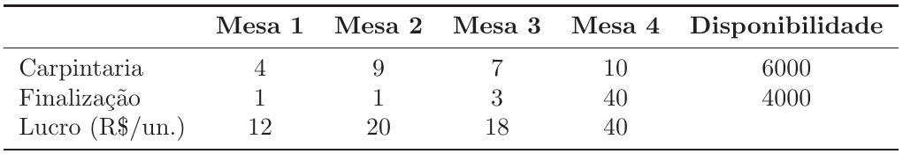
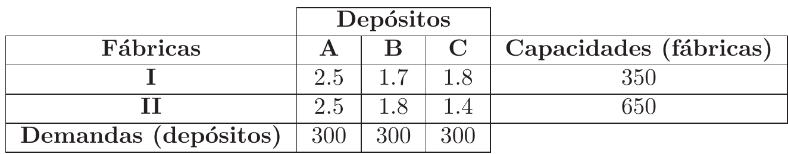
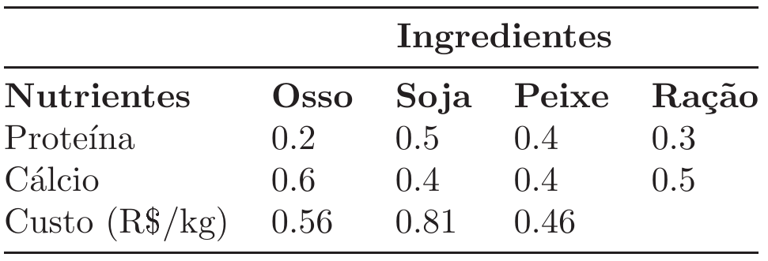
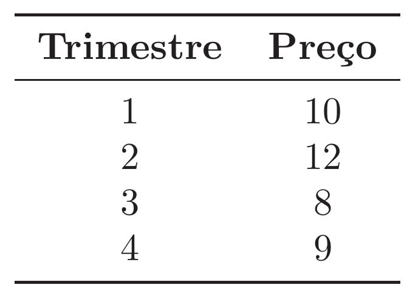

Notas de aula Pesquisa Operacional
2025-03-28
Chapter 1 Modelagem
Para uma introdução histórica sobre a otimização e exemplos iniciais, veja a apresentação. Após finalizar este capítulo, veja as modelagens (prontas) da seguinte apresentação, em que alguns problemas das listas de exericios 1 e 2 são resolvidos.
1.1 Definições
Programação matemática: Programação matemática (ou teoria da otimização) é o ramo da matemática que lida com técnicas para maximizar ou minimizar uma função objetivo, sujeito a restrições lineares, não lineares e inteiras nas variáveis.
Programação linear: A programação linear (PL) lida com a maximização ou a minimização de uma função objetivo linear nas variáveis, sujeito a equações e/ou inequações também lineares.
Modelo matemático: O modelo matemático de um sistema é um conjunto de relacionamentos matemáticos que caracterizam o conjunto de soluções factíveis do sistema.
Percebemos então que a programação linear é uma forma de programação matemática, em que a função a ser otimizada e restrições são todas lineares nas variáveis. O objeto principal de estudo da programação matemática são os modelos matemáticos. Um modelo matemático (no nosso caso, linear) representa uma situação/problema/sistema do mundo, por meio de relações matemáticas. O processo de observar o problema e transcrevê-lo em um modelo matemático é chamado de modelagem, como mostrado na figura abaixo:

O objetivo da modelagem {não é encontrar uma solução para o problema}, mas simplesmente representa-lo de uma forma rigorosa por meio da matemática.
1.2 Modelagem matemática
Existem diversas formas e metodologias para a modelagem de uma situação como um programa linear (PL), porém, em última instância, a prática é a nossa melhor aliada, e com o tempo começamos a nos acostumar com a “sintaxe” da modelagem.
O modelo de PL deve ser composto de duas grandes partes: função objetivo (fo), que deve ser maximizada ou minimizada, e o conjunto de restrições. Lembre-se que tanto a fo quanto as restrições devem ser lineares. Independente da forma e da ordem da modelagem, os seguintes passos sempre devem existir:
Definição das variáveis de decisão: como o nome já diz, uma variável é {algo que muda}. Em um modelo matemático as variáveis são as quantidades que queremos encontrar e otimizar (por exemplo, quantidade a ser produzida, % de tempo que cada máquina deve ficar produzindo, quantidade de dinheiro investido, etc…). Representamos as variáveis com letras e índices (por exemplo, \(x_1\), \(x_2\), \(b\), etc…).
Definição dos parâmetros: ao contrário das variáveis, os parâmetros de um modelo não mudam, são constantes ao longo de todo o processo. Podemos pensar nos parâmetros como as quantidades dadas do problema (por exemplo, preço pela produção de uma peça, quantidade disponível de matéria prima, custo por hora/máquina produzindo, etc…).
Definição das restrições e função objetivo: a função objetivo deve relacionar as variáveis de tal forma que ela quantifique a qualidade de uma solução, por exemplo, em um problema de produção de ração, podemos quantificar uma solução pelo custo da receita criada. Sempre devemos indicar o que queremos fazer com a fo, maximizar ou minimizar (no caso da ração, obviamente o objetivo deve ser minimizado). As restrições vão determinar quando uma solução é factível (respeita todas as restrições do sistema) ou não. Por exemplo, podemos ter uma quantidade limitada de matéria prima para a produção da ração, de forma que uma solução não pode ultrapassar essa quantidade.
Para um exemplo completo de modelagem matemática (o problema da dieta), veja o material em https://alexandrechecoli.github.io/4-prog-linear/Materiais/Apresentacoes/1.0%20-%20IntroPL.pdf, no tópico Modelando um problema (pg. 84 do arquivo pdf).
1.3 Premissas da PL
De maneira um pouco mais formal, ao criarmos um modelo de PL precisamos garantir que algumas premissas sejam satisfeitas. Quando isso ocorre, podemos dizer que o modelo é de fato um PL. As premissas são as seguintes:
Premissa da proporcionalidade: Considerando o modelo da dieta, vista na introdução da disciplina. Se 1kg de banana fornece 7g de proteínas, a proporcionalidade afirma que 2kg de banana devem fornecer \(2 \cdot 7 = 14\)g de proteína.
Premissa da aditividade: Ainda considerando o modelo da dieta. 1kg de banana fornece 7g de proteínas, já 1kg de frango fornece 14. A premissa da aditividade afirma que, se usarmos 1kg de banana e 1kg de frango, a quantidade de proteína ingerida será de \(1\cdot7 + 1\cdot14 = 21\).
Premissa da continuidade e não negatividade das variáveis: A premissa da continuidade implica que as variáveis podem assumir quaisquer valores reais. No problema da dieta por exemplo, podemos comprar 1kg, 0.5kg, 2.85kg, etc…dos alimentos. Já a não-negatividade implica que as variáveis só podem assumir valores positivos (não seria possível comprar -0.5kg de banana, por exemplo).
Quando as variáveis precisam ser inteiras, temos um modelo de programação inteira (e não um PL), que é muito mais difícil de se resolver.
OBS2: Em alguns modelos pode ser necessário assumir variáveis com valores negativos. É muito fácil transformar esse modelo em um PL equivalente.
OBS3: As premissas de proporcionalidade e aditividade automaticamente garantem que as restrições são equações ou inequações lineares. Elas também implicam que a função objetivo é linear.
1.4 Exercicios
Para cada um dos problemas abaixo, faça o que se pede:
- Encontre o modelo de PL que descreve o problema.
- Identifique os parâmetros do modelo.
- Encontre a solução ótima dos modelos, usando o software GUSEK https://gusek.sourceforge.net/gusek.html. Para um tutorial de como baixar e usar o software clique no link https://alexandrechecoli.github.io/5-Tutoriais/tutoriais.html.
1.4.1 Exercicio 1
Uma indústria de móveis produz 4 tipos de mesas. Cada mesa passa por dois processos, carpintaria e finalização. O número de horas/homem necessários em cada etapa é mostrado na Tabela abaixo; bem como a disponibilidade. A Tabela também aponta o lucro pela venda de cada unidade de mesa.

1.4.2 Exercicio 2
(O problema do transporte) Uma empresa possui 2 fábricas (I e II) e 3 depósitos (A,B e C). Cada fábrica possui uma capacidade de produção e cada depósito uma demanda de consumo. Existe uma distância entre cada fábrica e cada depósito, de forma que há um custo associado a cada unidade de produto transportado de uma fábrica a um depósito. A empresa precisa atender às demandas dos depósitos, sem exceder as capacidades produtivas das fábricas. Os dados de demandas, capacidades e custos de transporte são mostrados na Tabela abaixo:

Por exemplo, a capacidade da fábrica 1 é de 350, o custo para se transportar uma unidade da fábrica I ao depósito B é de 1.7.
1.4.3 Exercicio 3
(Problema de mistura) Uma agroindústria deve produzir um tipo de ração para determinado animal. Essa ração é produzida pela mistura de farinhas de 3 ingredientes básicos: osso, soja e resto de peixe. Cada um desses 3 ingredientes contém quantidades de dois nutrientes necessários a uma dieta nutricional balanceada: proteína e cálcio. O nutricionista especifica as necessidades mínimas destes nutrientes em 1kg de ração. Cada ingrediente é adquirido a um certo custo unitário (R$/kg). Os dados são apresentados na Tabela abaixo:

Por exemplo, em 1kg de osso existe 20% de proteína e 60% de cálcio, a um custo de 0.56. 1kg de ração demanda pelo menos 30% de proteína e 50% de cálcio.
1.4.4 Exercicio 4
(Problema multi-período) Um depósito compra e armazena um item para vender depois. O depósito consegue armazenar somente 100 unidades do item, a um custo de R$1.00/unidade por trimestre. Em cada trimestre o preço de compra é igual ao de venda. Esses preços variam de trimestre para trimestre como mostrado na Tabela abaixo:
